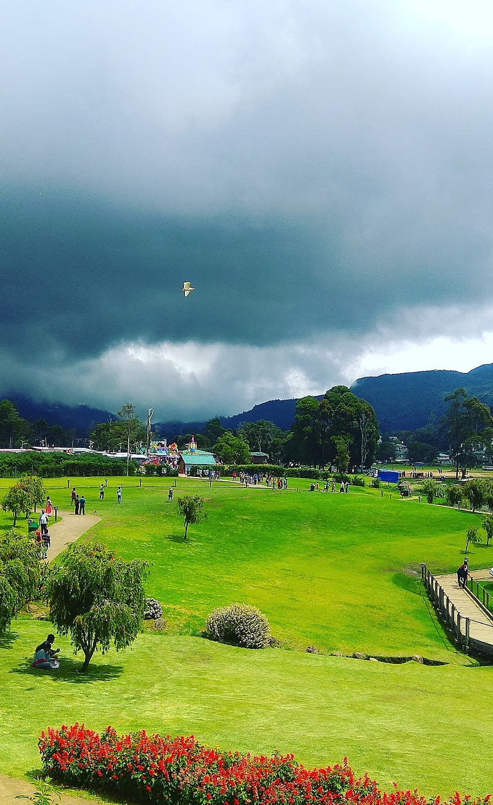
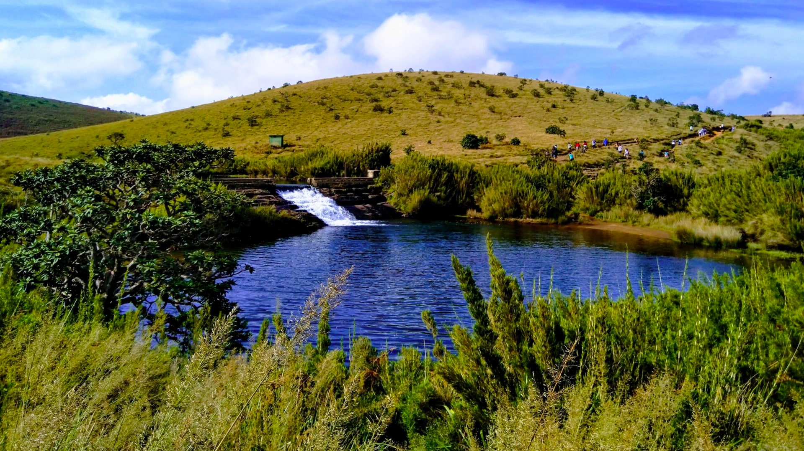
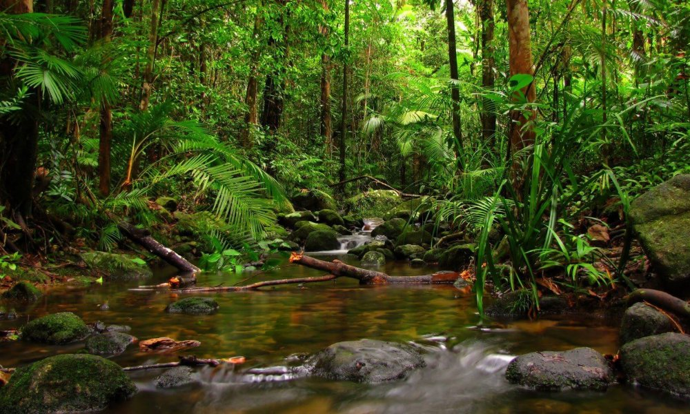
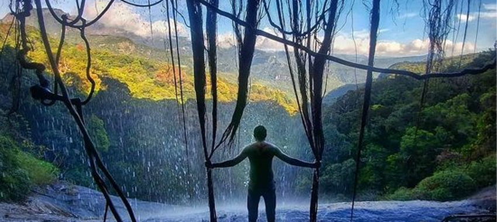
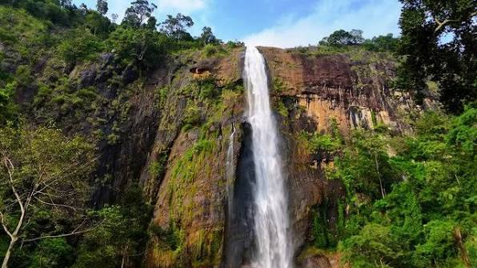
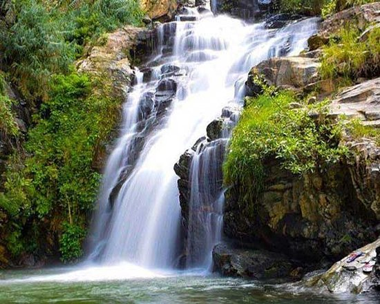
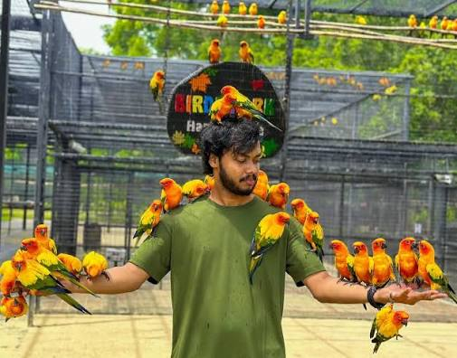

Nature Tours Sri Lanka
Explore Sri Lanka's mountains, forests and waterfalls with scenic nature tours from LetsGo.
Scenic Landscapes
Witness rolling mountains, deep forests and beautiful valleys around Sri Lanka.
Waterfalls
Visit stunning waterfalls and peaceful natural viewpoints.
Eco Tourism
Enjoy environmentally friendly travel with spectacular scenery and fresh air.
About Nature Tourism
Mountain and Forest Trails
Sri Lanka's lush interiors are filled with mountains, tea country, forests and hidden trails perfect for scenic exploration.
Popular Destinations
Travel to Ella, Nuwara Eliya, Horton Plains, Knuckles Mountain Range, Sinharaja Forest and Diyaluma Falls for unforgettable nature experiences.
Why Travelers Love Nature Tours
Nature tours offer hiking, fresh air, photography opportunities, cascading waterfalls and the beauty of Sri Lanka's green landscapes.
Best for
These tours are ideal for couples, photographers, families and travelers seeking a peaceful escape into nature.
Popular Nature Destinations

Ella
Famous for green valleys, breathtaking viewpoints, waterfalls, and scenic train journeys through the mountains.
Explore Ella Nature Tour →
Nuwara Eliya
Discover cool climates, tea estates, waterfalls, and beautiful mountain landscapes in Sri Lanka's hill country.
Explore Nuwara Eliya Nature Tour →
Horton Plains
Experience open grasslands, mountain views, hiking trails, and the famous World's End viewpoint.
Explore Horton Plains Tour →
Sinharaja Forest
A UNESCO rainforest with rich biodiversity, wildlife, and unforgettable jungle trail experiences.
Explore Sinharaja Forest Tour →
Knuckles Mountain Range
Explore hiking trails, waterfalls, misty mountains, and untouched natural landscapes.
Explore Knuckles Nature Tour →
Diyaluma Falls
Visit one of Sri Lanka's tallest waterfalls with stunning views and natural adventure experiences.
Explore Diyaluma Waterfall Tour →
Ravana Falls
Discover the legendary Ravana Falls, a scenic cascade steeped in local folklore near Ella.
Explore Ravana Waterfall Tour →
Hambantota Birds Park
Explore Sri Lanka's largest birds park and discover hundreds of colourful local and exotic bird species in a peaceful natural environment.
Explore Hambantota Birds Park →Tour Highlights
Hiking
Explore scenic trails through hills, forests and tea country.
Waterfalls
Visit impressive waterfalls and tranquil natural pools.
Mountains
Enjoy breathtaking highland views and cool weather.
Eco Tourism
Travel with sustainability and conservation in mind.
Frequently Asked Questions
What is included in a nature tour?
Private transport, sightseeing support, flexible itineraries and pickup options are typically included.
Which places are best for nature tours?
Ella, Nuwara Eliya, Horton Plains, Knuckles and Sinharaja are excellent choices.
Can I combine this with adventure tours?
Yes, nature tours can be paired with hiking, trekking and adventure activities.
Related Tours
Adventure Tours
Enjoy hiking, rafting and outdoor experiences in the same scenic region.
Explore TourSafari Tours
Explore Sri Lanka's wildlife parks and jungle habitats with a safari-focused itinerary.
Explore TourBook Your Nature Tour
Discover Sri Lanka's mountains, forests and waterfalls with LetsGo.